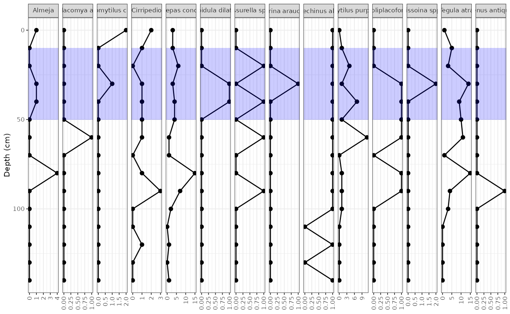
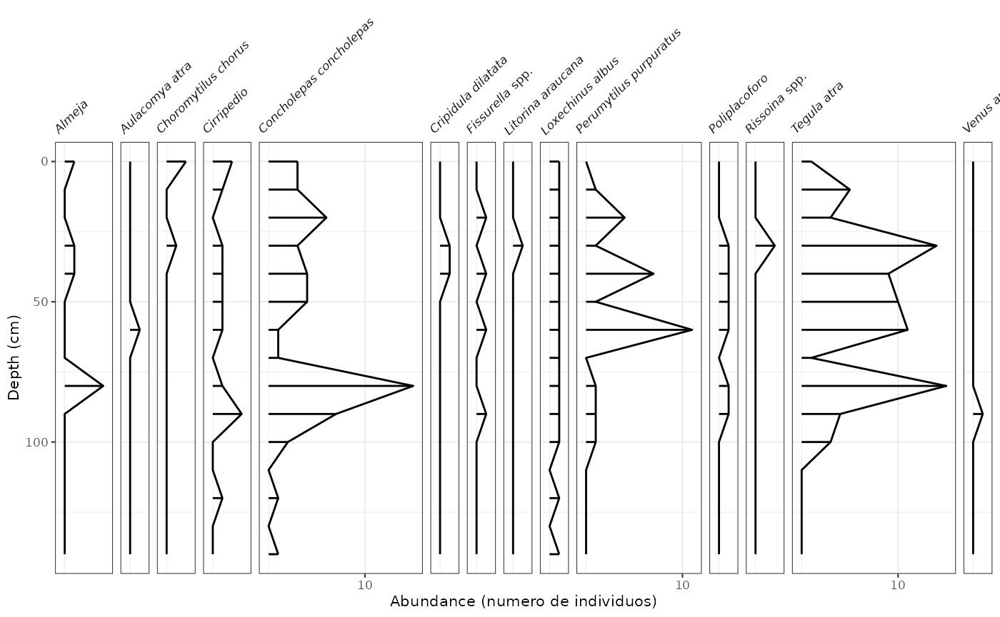
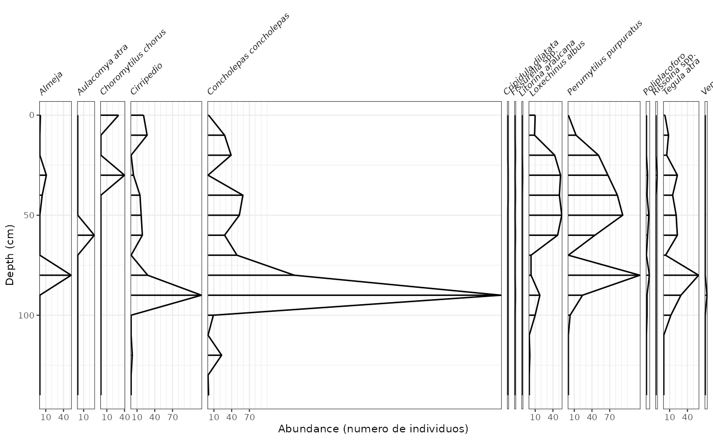

som.RmdEn este mini tutorial trabajaremos con los packages ggplot y tidypaleo “modificado del tutorial de Dewey Dunnington (2018)” para hacer una figura en profundidad de datos obtenidos por Romina en conchales.
Active o desactive # para instalar algún package que necesitemos
# Desde CRAN
# install.packages("ggplot2")
# install.packages("tidyverse")
# install.packages("here")
# Desde Github
#devtools::install_github("thomasp85/patchwork")
#devtools::install_github("paleolimbot/tidypaleo")Primero cargamos los datos desde nuestra carpeta (recomiendo usar el package here para que podamos reproducir las figuras desde cualquier maquina sin cambiar el directorio)
mnidata <- read_csv(here::here("data-raw/MNI.csv"))Primero debemos ordenar los datos para que puean ser leido por ggplot, para esto usamos las herraminetas disponibles en el tidyverse package con la función gather(), la idea es dejar todos los valores en una sola variable que se conoce como tabla larga.
## reordenamos los datos en un formato de tabla larga
mnidata<- gather(mnidata, key = species, value = mni, 4:17)
mni_plot <- ggplot(mnidata, aes(x = mni, y = depth)) +
geom_lineh() +
geom_point() +
scale_y_reverse() +
facet_geochem_gridh(vars(species)) +
labs(x = NULL, y = "Depth (cm)")
## Una forma de resaltar un rango de profundidades
zone_data <- tibble(ymin = 10, ymax = 50, xmin = -Inf, xmax = Inf)
mni_plot +
geom_rect(
mapping = aes(ymin = ymin, ymax = ymax, xmin = xmin, xmax = xmax),
data = zone_data,
alpha = 0.2,
fill = "blue",
inherit.aes = FALSE
)
## O simplemente graficamos con lineas y puntos
mni_ggplot <- ggplot(mnidata, aes(x = mni, y = depth)) +
geom_col_segsh() +
geom_lineh() +
scale_y_reverse() +
facet_abundanceh(vars(species)) +
labs(x = "Abundance (numero de individuos)", y = "Depth (cm)")
mni_ggplot
Ahora cargamos los datos de NMI y repetimos las lineas de arriba, cambiando el nombre del archivo por
nispdata <- read_csv(here::here("data-raw/NISP.csv"))Ordenamos los datos en un formato de tabla larga
## reordenamos los datos en un formato de tabla larga
nispdata<- gather(nispdata, key = species, value = nisp, 4:17)
## Y graficamos con ggplot
nisp_plot <- ggplot(nispdata, aes(x = nisp, y = depth)) +
geom_lineh() +
geom_point() +
scale_y_reverse() +
facet_geochem_gridh(vars(species)) +
labs(x = NULL, y = "Depth (cm)")
## Una forma de resaltar un rango de profundidades
zone_data <- tibble(ymin = 10, ymax = 50, xmin = -Inf, xmax = Inf)
mni_plot +
geom_rect(
mapping = aes(ymin = ymin, ymax = ymax, xmin = xmin, xmax = xmax),
data = zone_data,
alpha = 0.2,
fill = "blue",
inherit.aes = FALSE
)
## O simplemente graficamos con lineas y puntos
nisp_ggplot <- ggplot(nispdata, aes(x = nisp, y = depth)) +
geom_col_segsh() +
geom_lineh() +
scale_y_reverse() +
facet_abundanceh(vars(species)) +
labs(x = "Abundance (numero de individuos)", y = "Depth (cm)")
nisp_ggplot